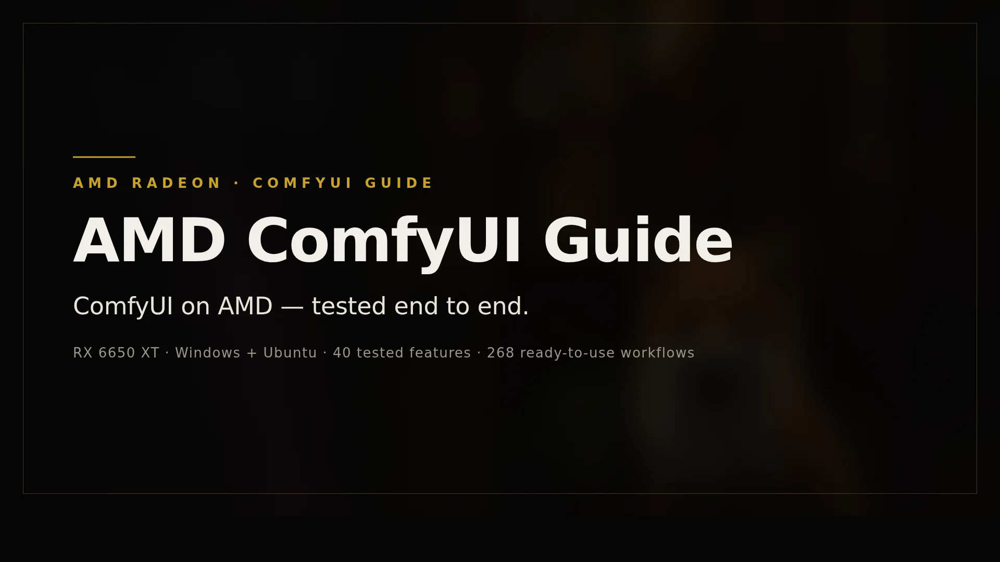
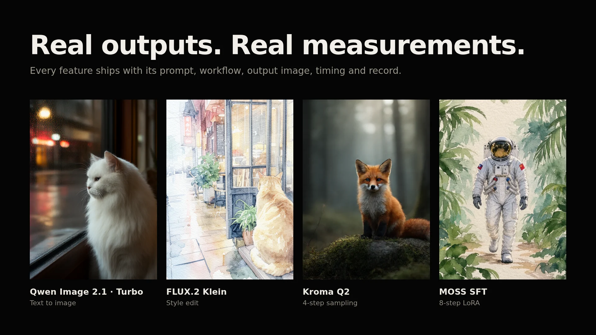

在 AMD 显卡上跑 ComfyUI：每一步实测，每个结果可查。
Windows 与 Ubuntu 分步教程 · 7 个模型系列 40 项功能 · 268 份工作流 · 全部在 RX 6650 XT（8GB）上逐项记录

不知道从哪读？按你的目标选一条路。
你的显卡、系统与版本组合是否适用；8GB 显存在这里的真实含义。
唯一从全新独立环境完成全链路验证的安装路径。
装完先验证 GPU 真的能出图，再谈其他功能。
不是 RX 6650 XT？先看三档结论，避免把单卡结论当通用兼容性。
每项功能都有独立的提示词、工作流、输出图片、耗时与结论；失败与部分达到保留原样。
